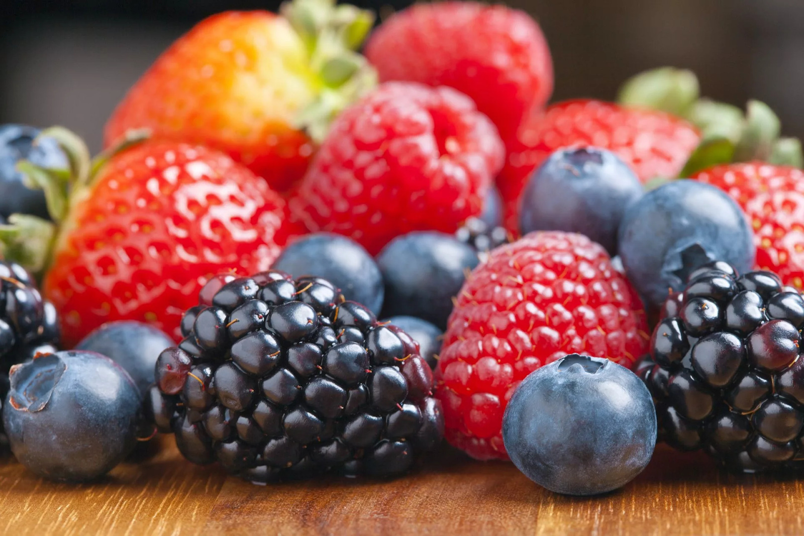

Ягоды
Ягоды, такие как черника, малина и клубника, являются отличным источником антиоксидантов. Они помогают снизить риск сердечно-сосудистых заболеваний и обладают противовоспалительными свойствами.
Ягоды, такие как черника, малина и клубника, являются отличным источником антиоксидантов. Они помогают снизить риск сердечно-сосудистых заболеваний и обладают противовоспалительными свойствами.
Орехи содержат полезные жиры, белки и много витаминов. Половина чашки грецких орехов может помочь улучшить здоровье сердца и поддерживать уровень холестерина в норме.
Авокадо является отличным источником мононенасыщенных жиров, которые полезны для сердца. Они также содержат много клетчатки, что помогает пищеварению.
Киноа - это безглютеновая крупа, богатая белком и полезными витаминами. Она идеальна для веганов и вегетарианцев и прекрасно подходит для салатов и гарниров.